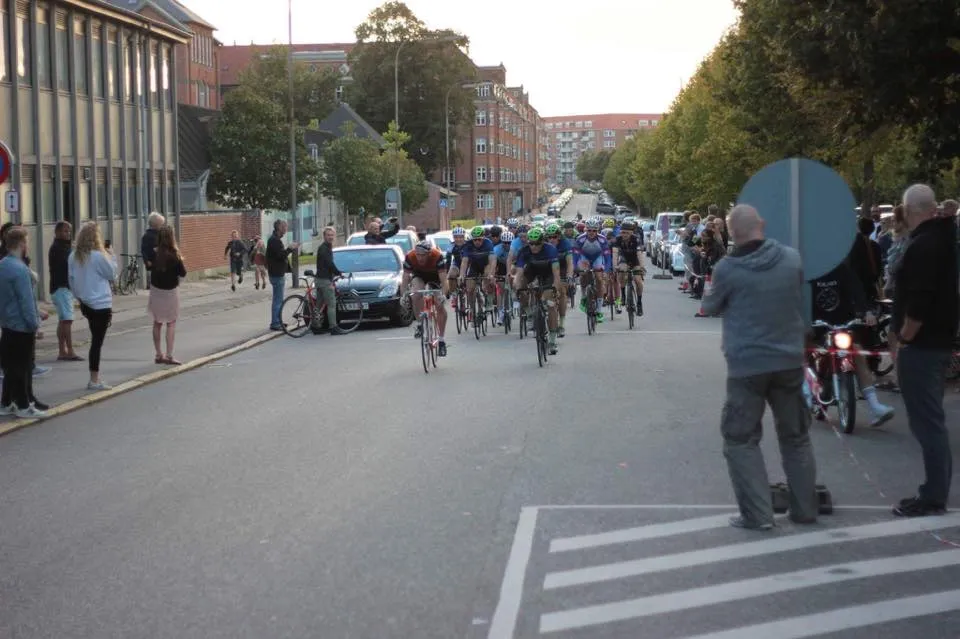
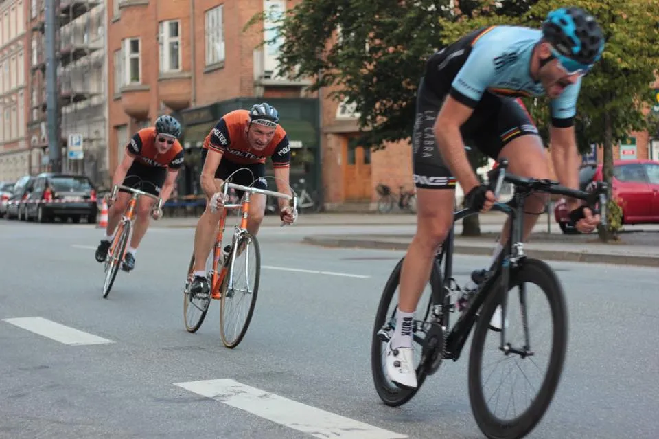

Løbsberetning: GSV Grand Prix

For femte år i træk blev der afholdt Grand Prix GSV, og Squadra Molteni markerede lejligheden med et fremmøde af fem af holdets stærkeste rouleurs.
Grane, Niels, Eigil, Kasper og Svend. Det var os mod russerne – og Mads Würtz Schmidt fra Det Sorte Værksted!
11 omgange på Ingerslevs Boulevard – MIDT i Aarhus – MIDT i Aarhus Festuge – 11 kilometer for fuld pedal. Tilsat Gin, Long Pebber Snaps, damer og Mexican Coffee Liqueur – Der var øl til slapsvansene og komplimenter til damerne.
Gruppo Sportivo Velopresse har hovedkvarter i Lucca – Italiens cykelperle – og selvom Squadra Molteni’s hovedsponsor er lidt længere nordpå i støvlelandet, er vi ikke for fine til at komme i sidste øjeblik til indskrivningen. Bare lige for at så lidt tvivl i konkurrenternes hoveder. Især russernes!
VM i koldstart

Belært af sidste års fejltagelse, blev der ikke bundet belgiske øl før starten. Tilgengæld stod det hurtigt klart, at GSV var til at handle med, og russerne havde mest på spil, og åbenbart mest at handle med. Derfor blev opvarmningen mest for tilskuernes skyld.
GSV Grand Prix er verdens hurtigste cykelløb! 80 km/t og det gælder om at holde sig til. VM i koldstart har kaptajn, Niels Bjørnsteen, døbt løbet. Efter masteren slog ud efter første omgang, var det alle for sig selv. Kasper’s nerver var i laser efter den missede belgiske øl, og han trak sig fra positionskampen.
Eigil og Grane hang godt med i bagenden af feltet sammen med Svend. Kaptajn Niels fik møvet sig ind i forreste geled under masteromgangen.
Da masterknallerten gassede op og kørte væk 200 meter før startstregen stak Niels. Et par tusind watt blev banket ned i det knagende Campagnolo Nuovo Record kranksæt – og han kørte i front ud på første omgang. Førringen holdt godt 400 meter – så kom hele ulvekoblet. Niels nåede dog lige at få de sidste detaljer på plads med Mads Würtz og russerne.
3 tænder for meget

Efter et par omgange fandt Niels og Kasper sammen på mellemhånd bag de forreste. Squadra Molteni var spredt over hele Ingerslevs Boulevard. Grane havde også kørt juniorløbet under navnet Granbino, og var allerede mør i benene.
Eigil og Svend kæmpede det bedste de havde lært, men bjergben og gadeløb hænger altså ikke sammen. Økonomiske og internationale politiske aftaler ville det sådan, at Squadra Molteni ikke skulle køre med om sejren i dag.
Kasper og Niels kom i et godt samarbejde, og begyndte at æde ryttere bagfra – én efter én. Det Orange Eksprestog sled asfalten op på Ingerslevs Boulevard. Kommunen er blevet underrettet. En stærk Team Ridley-Briançon-rytter kom også med, og han smed masser af kul på i føringerne.
På sidste omgang kørte Kasper lead-out for Niels, men Briancon-rytteren klikkede ud i 11’eren, og selvom Niels smed den ud på møtrikken med 14 tænder, var det desværre 3 tænder for meget – og ikke nok. Han blev overspurtet af carbonisten fair and square.
Epilog
De 11 omgange på ca. 11 kilometer blev kørt på små fem minutter. Så hurtigt at selv løbsansvarlig Il Dottore kom i tvivl om omgangshøjden. Men da Mads Würtz Schmidt spurtede sig til sejren, var han alligevel ikke så overrasket, sjovt nok.
Selvom det italienske lobbyarbejde blev gjort til punkt og prikke, var der desværre ikke noget at gøre. Sejren måtte gå til Mads Würtz Schmidt, der til næste år kører for det russsiske hold Katuska.
Førstepræmien var, tilfældigvis, skænket af Katinkatushas soigneur – et par lækre solbriller – som helt sikkert vil være at finde på WorldTouren næste år.
Efterfølgende var der musiko, præmiero, ostepopso, champagno, mere gino og snapso, og chilli con carno – slapsvansende kunne også få den uden jalapeños.
Et kærligt tak til Gruppo Sportivo Velopresse for at gøre det muligt. Tak til Il Dottore, Kim Kickxen, Johan Petri (sikkerhedsansvarlig og NUL dødsfald), Andreas Svinth og alle jer andre vi ikke har nævnt fra @GSV hjælpere. Det er et kæmpe arbejde, og det fortjener ti ud af seks stjerner.
Vi ses til næste år!
AltOmCykling.dk har også skrevet en anbefalelsesværdig beretning fra løbet.